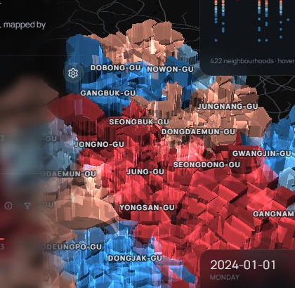
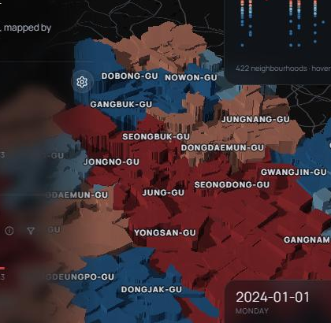
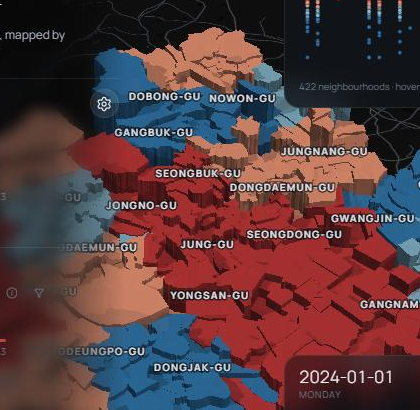
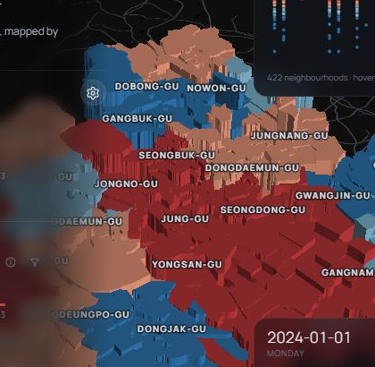

3D 모습 고르기 — 목업
아직 아무것도 적용하지 않았어요. 실제 앱을 같은 화면에서 찍은 그림이고, 모두 Vignette 켜짐 상태예요. 1과 2에서 하나씩 골라 주세요.
1설정에서 3D 모습을 고르는 방식
지금의 Glow·Vignette 스위치 대신, 3D는 A와 C 둘 중 하나만 고르게 돼요. 2D는 그대로(빛 효과 없음, 검은 경계선).
1-가 · 그림 타일
A · 빛이 겹쳐 밝아짐
MapEffectsInteractionExport
3D look

GlowA · 빛이 겹쳐 밝아짐
Solid
C · 단단한 색
C · 단단한 색
Bubbles
HalosA faint glow round every bubble
베이스맵 고르기와 같은 모양. 그림을 보고 바로 고를 수 있어요.
1-나 · 목록
MapEffectsInteractionExport
3D look
GlowA · 겹치는 기둥이 빛처럼 밝아짐
SolidC · 단단한 색, 낮은 해의 음영
Bubbles
HalosA faint glow round every bubble
설명이 더 길게 들어가요. 패널이 조금 더 차분해 보여요.
2C(Solid)에 빛을 얼마나 줄지
해·주변광 세기는 kepler에서 1이 최대라 더 올릴 수 없어서, 해의 높이·그림자·투명도로 밝기를 바꿨어요.


